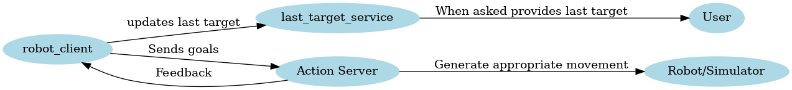

|
assignment 2 part 1
|
Welcome to the documentation of the assignement 2 part 1 code for the Research track course. To work this code needs:
The package consists of two nodes, act_client and targ_coords_srv. The first is the client for the action server contained in the package assignment_2_2024. The second is a service node that implements a custom service.
This node is a client for the action server contained in the package assignment_2_2024. It has three main tasks. The first task is to send new target coordinates to the server, the robot in the simulation will the try to reach them. This has been implemented by sending the coordinates with the goal message of the action server. The user can also cancel the the last coordinates sent, the robot will the stop where it is. The second task is to control the feedback message sent by the action server and check if the goal has been reached. The callback function for the action server feedback message was defined, in it we compare the latest target coordinates with the actual position sent in the message, if they are close then the goal is reached. The last task was to publish position and velocity information with a custom message in a new topic. To retrieve this information a subscriber to the topic /odom has been implemented, to make it run simultaneously with the previous code a dedicated thread for the line ros::spin() is launched. In the callback function the custom message is prepared and then published on a new topic /robot_state.
This node implements a custom service that retrieves the coordinates of the last target asked by the user. To do it, it subscibes to the topic /targ_coords where act_client publishes all the asked targets. When the service is called a callback function reads the last thing on that topic and returns it.
The following diagram illustrates the interaction between the nodes and services in this package (and in the assignment_2_2024 package):

After sourcing the right setup files, to run the code you simply need to clone this repository inside your ROS workspace, compile it with catkin_make, then run the following command inside the ws folder:
This command will launch the whole simulation plus the two node developed. If you want to 'listen' to the topic /robot_state where the custom message for robot position and velocities gets published, in another terminal run:
If you want to use the service that returns the last target coordinates, in another terminal run:
Luca Bricarello
University of Genoa
Research Track II Assignment 1
1.8.17